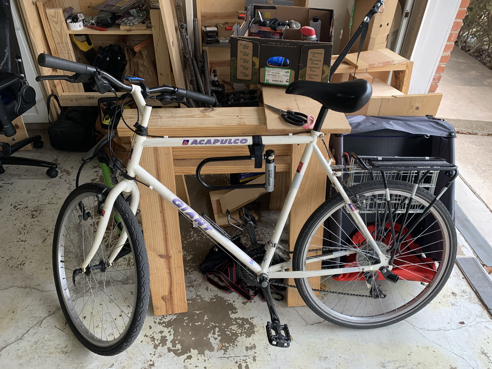

uses this
uses this
uses this is a collection of interviews with individuals asking them about their hardware and software uses. i love this topic. of course, i'm not interesting enough to do interviews with anyone, but i do think my hardware and software uses are more interesting than many of the real answerer's° . so, here's what i use!
hardware
i use a collection of hardware i've built, scrounged, borrowed or (reluctantly) bought over the past 10ish years. the place with the most New Stuff is audio gear, as I put together some audio improvements now that I live work and die at home. I'm separating the hardware topic out into a few categories:
networking
i love unifi° stuff. I've got two 8 port switches (one PoE, one powered regularly, got about 3 years apart), a 3port usg, and a PoE unifi ap ac lite. its really nice to have everything talk to a central place, and makes troubleshooting network issues a lot easier. Unifi does have some problems with reliability on new updates, so I typically update once a month, giving any new updates time to settle before I apply them. I haven't had an outtage since the first month i got the USG ✨
the rack that the unifi stuff lives in is a 19" home network rack that is (apparently) very popular in europe and aboslutely impossible to find parts for in the US. I have paid someone in germany a decent amount of money to 3D print fittings so tha I can have a better rack setup. I haven't tested the new parts yet so ymmv, but here is the website I used.
servers
i have a built from scratch very old "server" that used to be my main computer. It was the first computer I built when I moved out into my own apartment. Its got a i5-2500K, which google tells me is from 2011, so I got this about a decade ago. It has 16 gigs of ram and some very shitty graphics card. it hosts my media server shit, which includes the *arr apps, plex, sabnzbd, etc.
I have a raspberry pi that serves as my VPN endpoint for a site2site wireguard configuration. the pi acts as an always-on router that can talk to my home network.
I have an extremely old synology 4 port nas. friend gave it to me several years ago, after he had owned it for a bunch of years already. it still gets updates. its slow, and soon i'll have to upgrade to still get updates, but for now its still does me good.
i have a collection of vms in digital ocean, the precise number of which fluctuates based on any ongoing projects. right now, I have 3: a pleroma server, a matrix server ° , and a General Purpose server that hosts several things, including gitea, my znc server, and some bots that are either pointless, broken, or shitty (but are fun, and i made them!).
user devices
i have too many of these lol. i have a windows tower that is just for playing games. its got a Ryzen 3*** series CPU and 16 gb of ram. I've got a system76 oryx that i have used as my primary user device since 2016. Its a lovely device with a few caveats; system76 sells rebranded clevo machines, and there are more than a few QC issues with these guys. the laptop keyboard doesn't work reliably at all, though in my case that's fine because I never use it as a laptop, its always attached to my full desk setup.
for mobile devices i have an iPhone XS (though i'm thinking of side-grading to the new iPhone mini in the hopes that a smaller screen and lighter weight device will help with my rsi), a shitty Samsung Tablet 8 (i think?) that i use to play around with android distrobutions. right now its running lineageOS. I also have a switch for playing games.
user IO devices
I'm in the process of building out a version of my brother's deskmx project; i have 3 mixers (one acts as a preamp for mics, one is a mic input splitter to connect to all my devices, and 1 is just for headphones). this is still on going and i'll probably write about what i've done and what, if anything, i did different than my brother once its finished.
i have two ergodox infinity keyboards; in the past this was so i could have one at work and one at home. now i just have one on my desk and one on my workspace, for when i inevitably change out some switches. i love these keyboards, though i do wish i could have better tenting. I also have a ~10 or 11 year old razer black widow 10keyless which is just like the one linked except doesn't have backlighting or rgb or any of that. this has lasted a respectable amount of time, though I did have to replace the USB IO board in 2020.
i have a stupid collection of mice, mostly as part of a "can i help my RSI" series of experiments. God's own mouse is the logitech g9x, which i had for 8 or so years before it finally gave up the ghost. i love that mouse. It now sells on ebay / amazon for 399, though when i bought it first i think i paid ~60 USD for it. I also have a logitech vertical mouse which I am currently using for most of my computing needs, and a benQ zowie EC1 which I hoped would adequately replace my g9x in terms of hand fit, and it did not :(.
misc
 i also have a beat up 90s era hardtail bicycle that i love to death. its a piece of shit and i love it very much. i am also excited to buy another bike, eventually, but this one is suiting me just fine for now.
software
operating systems
Nothing crazy here outside of my desktop. i primarily use linux things. for my personal every day use, I rely on nixOS. i love it a lot. for all my servers i run debian, though I hope to change that soon to either guix or nixos (depending on cloud support). I use macOS for work, and windows to play games that aren't fully compat with valve's proton° tool.
desktop env
this is a bit more interesting.
on top of nixOS i have a (i'm sure terrible) desktop environment. i use awesome window manager to orchestrate everything. i use rofi as my launcher, window switcher, etc. I have come to rely on espanso to give me access to emojis and text macros - an exmaple of this is I can type like :sparkles: and get ✨ to appear! I also use scrot to give me a good UX when screenshotting. i use firefox as my browser, and basically everything else that isn't terminal based I do in gnu emacs.
emacs, and all the shit i do with it
emacs gets its own section because its so fucking good. emacs is a platform for solving problems you face on your computer. in order to be a good user of emacs you need to know emacs lisp (sorry lol). once you are comfortable at least fucking around with existing code and modifying it to better fit you, you become capable of addressing basically any problem you might run into.
katherine cox-buday (interviewed in uses-this, who i cite at the end of this article) describes emacs and elisp like this: "If you know a little emacs-lisp, you can begin down the path of creating your own perfect tool which will grow with you, for life." I really like that; over years I can make a tool that's worn to exactly how I hold the keyboard, how I move between applications, etc. emacs is dope.
the two primary things I do in emacs:
- writing (documentation, todo lists, keeping track of my responsibilities) which is done in org mode.
- programming and interfacing with version control systems, which is done in various modes (for programming) and magit (for vcs).
If you want to look at my dot files they are here.
programming and versioning and config management (ansible et al)
i'm not doing anything very interesting here outside of my emacs/elisp usage.
- most things i write in python
- i've written some stuff in elisp that's mostly "taking code that already exists and tweaking it until I have what i want" (see my work on blogging on ghpages with orgmode)
- config management is done via ansible.
- technically I also have written some lua to solve a problem i had with awesomeWM.
services i host and use.
as mentioned previously, my mediaserver setup hosts the *arr apps° . I use plex° to serve media files to my users (me, friends, family). i store the configs for these things in a docker-compose format that deploys a swarm, which itself is deployed through ansible.
I use bitwarden's° hosted offering for my password manager. I moved to it from 1password, which I think is mostly better (especially from a polish point of view), due to the availability of clients on more platforms than 1password offered. 1pass now has a linux client, I understand, but opensource is my preference politically anyway. I've written about the process of moving to bitwarden here.
for cloud infra services i am currently using digitalocean° . i may end up migrating off them to get to a provider that gives me more control over my OS, but i really love DO.
this blog is currently hosted on github pages as mentioned previously. i use fastmail for email and i really like them. i'd like to not have a reliance on an australian hosted company for reasons but, frankly, email is plain text anyway and trying to force encryption on top of the email platform tends to fail real bad (see gpg). long term i'd love to move but nobody else has as good a product for the same ballpark of price.
my ideal setup
this doesn't exist the fun part is fucking with what you have! here are some things i'd love to try out:
- guixSD and all that implies; I'm fucking around with
nixOSright now and i like it a lot (though, wow, rough edges). guix would be taking my like of reproducability and declarative configuration and marrying that with scheme and emacs more tightly than nix does. from a political standpoint it would also be closer to what i'd like. it seems like a pretty big usability trade off though, which is why i haven't done it yet. guixSD useshurdrather than the linux kernel, and the learning curve for that would be steep. - set up nixops. if I stick with nix, i'd love to play with this.
guixof course has a similar tool, with guix deploy, if I end up there. i love the idea of moving out ofansibleand onto something that treats declarative management as a first class citizen with the OS. tbh ansible is sorta disappointing with that; why redhat didn't make ansible have better interfaces to rh specific stuff i'll never know. also now that rh is actually IBM i'm nervous about future stability ( a possibly silly case of nerves; its not like IBM hasn't been around a long time ) - upgrade my linux laptop; i've thought about one of the newer XPS13 or 15s, as well as newer system76 options. i haven't decided what i'll end up doing. my current computer is chugging along just fine, even if i would be so pleased to have usbc charging and a device with fewer, uh, personality traits.
- related to that, i'd love to standardize everything on usbc if possible. my work machine is a mbp16" which uses USBC, my personal laptop is the old standard barrel charger, my phone is fucking lightening, my backup battery is usbMicro, uuuuuugh. fuck i would love to just have like, 2 cables that did everything for me.
- a change in phone; i'd like to experiment with alternatives to apple or android. the pinephone or the librem 5 from purism are the two options most available to me as a US based person. sailfish by Jolla seems like a great alternative if you're in the EU; SFOS is its own thing, but it has an Android compat shim that lets its own app ecosystem be bootstrapped by android. smart. my understanding is that there are band issues with EU phones in the US, though i haven't seriously looked into it. i've been on iOS since i got off of my little sidekick-like phone after a very bad bicycle accident. phones are hard to change, though. I care a lot about security, privacy, and user control, and MAN. those three things are not necessarily at loggerheads by default, but the people who champion each one of those efforts in the mobile space all have forgotten the OTHER two exist.
articles from uses this that i like
- alice mazzy's interview: https://usesthis.com/interviews/alice.maz/. she's always interesting. she's got writing that i like, too. her article on minecraft economies and breaking them is one of my favorite reads.
- chris randall's: https://usesthis.com/interviews/chris.randall/. big focus on audio production in this one. super interesting stuff.
- justine haupt's: https://usesthis.com/interviews/justine.haupt/. just cool topics and things she uses. check out her website, too, she has done some cool shit
- katherine cox-buday's: https://usesthis.com/interviews/katherine.cox-buday/. hell ya a REAL LIST of SHIT i love it
- paul ford's: https://usesthis.com/interviews/paul.ford/. i loved this guy's detail and that he thought about why he was collecting some of his data (computers are tools for thinking, (to him) and not, in this context, for productivity).
if there's anything you've read from uses this that you especially liked email me about it. i'd love to read whatever you liked :)